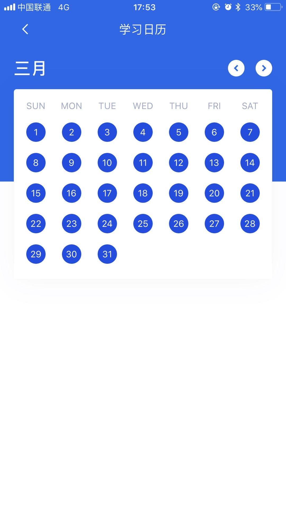

每日英语
文章目录
以下将是自己每日所学英语，怕引起不适，故在首页省略展示。
2020-05-08
2020-05-07
When night falls, the moon begins the shine.
夜幕降临，月亮开始照耀大地We are going to see an open-air movie.
我们准备看一场露天电影
2020-04-29
Santorini is a beautiful island located in Europe.
圣托里尼是一座位于欧洲的美丽海岛It was so funny that the incon cried with laughter.
(这个笑话)太好笑了，表情都笑出眼泪了(laughter:「n」笑，笑声)。The boy is jumping over the steam.
那个男孩正在跳过小溪The teacher asked the girl which pen was hers.
老师问女孩哪一支笔是她的Both of them enjoy the meal.
两个孩子都很喜欢这顿饭Cinderella shall go to the ball.
灰姑娘会去舞会的The bamboo forest looks like a sea of green.
这片竹林看起来像一片绿色的海洋(forest:「n」森林，林区)Adding mint leaves to some foods or drinks can taste refreshing.
在一些食物或饮料中添加薄荷叶尝起来会很清凉(mint leaves: 薄荷叶)(taste:「n」味道、品味、审美「vt」尝、体验)The businesswoman looks at her computer in confusion.
这位女商人看着她的电脑一片茫然He’s also eating an apple.
他也正在吃苹果Others might not like my new hairstyle,but i love it!
其他人可能不喜欢我的发型，但是我喜欢！He comes from an outlying village to study in the city.
他来自一个偏远的村庄，现在在城市学习She mixes many different kinds if fruits,such as bananas and apples,into her smoothies.
她在冰沙里混合了香蕉苹果等多种水果We look the same as each other!
我们动作看起来很一致Look! Such a beautiful view.
看！这是多美的景色啊
2020-04-09
Humans,whales,cats and cows are mammals.
人、鲸鱼、猫、牛都是哺乳动物。The boy is worried about his homework.
这个男孩为功课感到担忧。There are shelled peanuts in the bowl.
碗里装着去了壳的花生。Every morning he brings me a package of things for my baby.
每天早晨他都给我带一包东西给我的宝宝。The little baby girl is crying.
小女孩正在哭泣。The American West was only settled by Europeans in the nineteenth century.
19世纪，在美国西部定居的只有欧洲人。The elephant raised his trunk to say hello.
大象举起鼻子来打招呼。The blind woman is crossing the street with her guide dog.
这位失明的女人正和她的导盲犬一起过街。He invented the light bulb.
爱迪生发明了灯泡。
2020-04-08
一直在白斩词上记英语，在3月中旬左右突然更新了，体验了新版，发现句子不见了，截止到今日也就没有按日更新句子，昨日发现可以在列表里看到已学过的词的句子，这下又可以愉快的记句子了，发现没记句子的这几天学的词都是朦朦胧的。
贴一张3月份的打卡记录：

接下来句子不能停，不能停，不能停
I think the shark wants to eat me!
我觉得这只鲨鱼想吃掉我！She is ill and is taken care of by the doctor.
她生命了，医生在照看她。We got lost in the foggy weather.
我们在大雾天气里迷路了。I hear some sounds out there.
我听到外面有声音。Tsinghua University is one of the most famous universities in china.
清华大学是国内最知名的大学之一。I enjoy eating Chinese dumplings for lunch.
我喜欢午饭吃饺子。I love hiking through mountains and deserts.
我爱徒步穿越山峰和沙漠。The ice cream tastes good.
冰淇淋味道不错。He is one of the most famous poets in Chinese history.
他是中国历史最著名的诗人之一。The students are having a running competition.
学生们正在进行跑步比赛。
2020-03-10
Today is my birthday!
今天是我的生日I like to wear my white coat.
我喜欢穿我的白色外套。Vegetables are ok,but i prefer eating meat.
蔬菜是不错，但是我还是更喜欢吃肉。There are different kinds of bread in the picture.
图片中有各式各样的面包。
陌生单词
kinds:
n. 种类；特征；圣餐的圣体（指面包或葡萄酒）（kind 的复数）prefer:
vt. 更喜欢；宁愿；提出；提升
vi. 喜欢；愿意
2020-03-09
Let’s meet again on the sixteenth – a week from today.
让我们16号再见吧，也就是一周后的今天Sea turtles swim so gracefully.
海龟再优雅地游水。The old friends are walking in a park.
这些老朋友正在公园里散步。After hearing the bad news,she cannot fall asleep.
听到这个坏消息之后他难以入睡I love eating cakes!
我爱吃蛋糕！Would you like a pet rabbit?
你想要一直宠物兔吗？I took a big bite out of my sandwich.
我咬了一大口我的三明治Ducks are swimming happily in the water.
鸭子们在水中愉快的游着。How did you get your hair so straight?
你如何让你的头发这么直的？Her hand looks so soft and clean.
她的手看起来又嫩又干净。My head aches – maybe I think too much.
我的头好痛，估计是我用脑过度。These students are having a music class.
这些学生正在上音乐课。This is a blue police cap.
这是一顶蓝色的警察帽My monther went to the supermarket with a shopping list.
我的妈妈带着购物清单去了超市。2020 is the Year of the Rat.
2020年是鼠年。
陌生词：
soft:
adj. 软的，柔软的；温柔的，温和的；软弱的；笨的
adv. 柔软地；温和地
n. 柔性；柔软的东西；柔软部分straight:
adj. 直的；连续的；笔直的；正直的；整齐的；异性恋的
adv. 直接地；不断地；立即；坦率地
n. 直；直线；直男，直女，异性恋者out of:
由于；缺乏；自…离开；用…（材料bite:
vt. 咬；刺痛
n. 咬；一口；咬伤；刺痛
vi. 咬；刺痛took:
v. 拿；取；接受（take的过去式）fall:
v. 落下；跌倒；下垂；跪下；（地面）向下倾斜；（数量等的）减少； （雨或雪） 降落；沦陷； 阵亡；进入（某状态）；突然来到
n. 落下；跌倒；（雪、岩石等的）降落；（数量等的）减少；秋季；垮台、衰败
adj. 秋天的asleep:
adj. 睡着的；麻木的；长眠的；不积极的；不专心的
adv. 熟睡地；进入睡眠状态（地）gracefully:[ˈɡreɪsfəli]
adv. 优雅地；温文地sea
n. 海；海洋；许多；大量
2020-03-08
“Who is the little boy in the photo?”,”it’s me.”
“照片上的小男孩是谁？”, “是我.”Look at the baby’s chubby legs! So cute!
看这个宝宝胖嘟嘟的腿，真可爱！This hamburger looks samll but delicious.
这个汉堡虽小，但看起来十分美味。This cat is my mom’s pet.
这只猫是我妈妈的宠物。The fresh red tomato is a healthy food.
红色的番茄是一种健康的食物。She is lying in the sun with bare feet.
她光着脚躺在阳光下。There are several fresh potatoes in the field.
田里有几个新鲜的土豆。I have four T-shirts.
我有四件T恤A basket of fresh fruits is on the wooden table.
木桌上放了一篮新鲜水果The horse’s long tail lifted up into the air as it ran.
马的尾巴随着其奔跑而甩向空中。She hurt her leg this morning.
今天早上她伤到了腿We need to kick every day.
每天我们都要踢腿She wears a red sweater.
她穿了一件红色的针织套衫Don’t be afraid of my pet snake; it’s very friendly.
不用害怕我的宠物蛇，它是很友好的。The three trousers have the same color.
这三条裤子颜色都一样。
单词
wooden:[ˈwʊdn]
adj. 木制的；僵硬的，呆板的several:[ˈsevrəl]
adj. 几个的；各自的
pron. 几个；数个field:[fiːld]
n. 领域；牧场；旷野；战场；运动场;字段
vi. 担任场外队员
adj. 扫描场；田赛的；野生的
vt. 把暴晒于场上；使上场fresh:[freʃ]
adj. 新鲜的；清新的；淡水的；无经验的
n. 开始；新生；泛滥
adv. 刚刚，才；最新地basket:[ˈbɑːskɪt]
n. 篮子；（篮球比赛的）得分；一篮之量；篮筐
vt. 装入篮
2020-03-07
She helped the old man to walk.
她帮助老人走路。Your tongue is longer than mine!
你的舌头比我的长！Did you get a good grade on your last exam?
最后一门考试你取得好成绩了吗？He wrote a summary of the terrible year he had.
这是他悲惨的2018年总结Cola is a sweet,brown drink.
可乐是种甜味的棕色饮料。We have a lot to learn about the human body.
关于人体我们有太多要学。Is this the right place to look for science fiction novels?
这是找科幻小说的地方吗？Her beautiful blonde hair is long and curly.
她的美丽金发又长又卷“Looking forward to seeing you soon.” She wrote it on the letter.
她在信中写到：“我盼望与你尽快相见。”Today is her birthday and she is 20 years of age？
今天是她20岁的生日They often dance with music.
她们常随音乐起舞。They were happy to buy this house.
他们高兴地买下了这座房子。Everyone had a great time at my birthday party.
在我的生日聚会上每个人都玩得很开心。He wore a thick coat to keep warm in the winter.
冬天他穿了一件厚外套来保暖。The girl is touching her arm.
这个女孩正在摸她的手臂
单词
terrible:[ˈterəbl]
adj. 可怕的；很糟的；令人讨厌的
adv. 很，非常
science:[ˈsaɪəns]
n. 科学；技术；学科；理科
fiction:[ˈfɪkʃn]
n. 小说；虚构，编造；谎言
novels:[‘nɔvəlz]
n. 小说（novel的复数）
thick:[θɪk]
adj. 厚的，有……厚；浓密的；粘稠的；浑浊的；迟钝的；明显的；粗壮的；（字体）粗体的；（气味）浓烈的；沙哑的；口音重的；思路不清的；大量的；（非正式）交情厚的
n. 最激烈处，最密集处，中心处
adv. 厚厚地；密集地
2020-03-03
I prefer the cold. snowy mountains over warm places.
比起温暖的地方，我更喜欢寒冷的、白雪皑皑的山区。My favourite pet is my dog, Lucy.
我喜欢的宠物是我的狗狗，露西。Today is the 15th of August.
今天是八月十五号。It’s time for breakfast.
是该吃早饭的时间了。There are four seasons in a year.
一年有四个季节。I usually get up around 7 o’clock in the morning.
我通常早上7点钟起床。
单词
perferred:
adj. 优先的；选择的over:
adv. 倒下；翻转；穿过；完全覆盖；以上；大于；再；结束；改变；完毕；仔细地
prep. 在……上面；从……上方；穿越；在……的另一边；在……的远端；从……落下；遍及；多于；在……期间；渡过；由于；关于；利用；通过；声音大于；高于；级别在……之上；优先于；超过
n. （板球）一轮投球
adj. 倒下的；折起来的；结束的；剩下的
v. 越过August:
n. 八月usually:
adv. 通常，经常
2020-03-02
She can swim like a finsh! Loook at her!
看看她，她像鱼一样游泳！Bring your umbrella. It is rainy outside.
带上你的雨伞，外面再下雨It’s cloudy today. so you can’t see the sun.
今天多云，所以你看不见太阳There snowy mountains are very beautiful.
这些白雪皑皑的山，非常漂亮The trees are swaying beacause of the windy weather.
树在大风天气中随风舞动。The blue sky means that today is a sunny day.
蓝蓝的天空表明今天是个晴天The doy can use an umbrella?
这只狗会撑伞？The weather this week has been mostly cloudy.
这周天气以多云为主In china, the flying swallows are a sign of spring.
在中国，飞燕是春天的讯号My family always take a summer vacation at the beach.
我家总会在海边过暑假Leaves turn yellow in the autumn.
秋天，叶子都变黄了。I can go skiing in the winter.
我可以在冬天滑雪I like eating bread with hot coffe.
我喜欢就着热咖啡吃面包We feel warm with the fire.
火让我们感到温暖Washing face with cold water is so cool.
用冷水洗脸特别凉爽。
陌生词
Bring:[brɪŋ]
vt. 带来；促使；引起；使某人处于某种情况或境地swaying:
v. 使摇动；支配；偏向一边（sway的ing形式）mostly:[ˈməʊstli]
adv. 主要地；通常；多半地swallows:
n. 燕子；咽喉；吞咽（swallow 的复数）
v. 吞下；做吞咽动作；吞没；用尽；轻信；不流露；默默忍受；吞并（swallow 的第三人称单数）vacation:[veɪˈkeɪʃn; vəˈkeɪʃn]
n. 假期；（房屋）搬出
vi. 休假，度假beach:[biːtʃ]
n. 海滩；湖滨
vt. 将…拖上岸
vi. 搁浅；定居turn:[tɜːn]
vt. 转动，使旋转；转弯；翻过来；兑换
vi. 转向；转变；转动
n. 转弯；变化；(损害或有益于别人的)行为，举动，举止
2020-03-01
The girl keeps a diary everyday.
女孩儿每天都在写日记We can get some gifts in Christmas.
我们在圣诞节可以得到礼物。The boy is making a Chrismas greeting card by himself.
这个小男孩亲自制作圣诞节贺卡。She felt happy when her boyfriend gave her a persent.
男朋友送给她礼物时她感到很开心。The girls felt merry and happy at the party.
在派对上这些女孩感到愉快和高兴She is always happy to see her friend.
见到自己的朋友，她总是很开心。
词
diary:[ˈdaɪəri]
n. 日志，日记；日记簿felt:[felt]
n. 毡，毛毡；毡制品
v. 把……制成毡；毡合；用毡覆盖
v. 感觉，感觉是；感受到；认为；触摸（feel 的过去式和过去分词）
2020-02-29
All of them have short hair.
他们都留着短发。The handsome man posed for pictures.
这位英俊的男子摆好姿势准备照相The man loves his new motorbike！
这个男人超爱他的新摩托车！They like their bookshop very much.
他们喜欢他们的书店There are so many animals in the zoo!
动物园里有好多动物啊！You can buy a lot of things from the supermarke.
你可以在超市买到很多东西There are some people relaxing by the lake in the park.
有些人再公园的湖边休息The patient was taken to the hospital for treatment.
病人被带进医院进行治疗Where do you want to go,child?
你要去哪里，孩子？We enjoy talking one the grass under the blue sky.
我们很喜欢蓝天下躺在草坪上聊天。People are resting under the big tree.
人们在这颗大树下休息。There are colorful flowers in that place.
那里有五颜六色的花。The little wooden boat floats on the water.
这艘小木船浮在水面上。The beautiful lake lies at the foot of the mountain.
那个美丽的湖泊坐落在山脚下。
词
posed：
v. 形成（pose的过去分词）；摆姿势；主张；装模作样relaxing：
adj. 令人放松的
v. 放松，休息（relax 的现在分词）taken：
v. 拿，带（take的过去分词）treatment：
n. 治疗，疗法；处理；对待patient：
adj. 有耐心的，能容忍的
n. 病人，患者；受动者，承受者lies：
n. 谎言（lie的复数）
v. 躺卧（lie的第三人称单数形式）foot：
n. 脚；英尺；步调；末尾
vi. 步行；跳舞；总计
vt. 支付；给……换底
2020-02-28
Her red skirt mathes well with her red sunglasses.
她的红色裙子和红色太阳镜很搭。We have kinds of dresses in our store. Try one on!
本店女装款式多样，欢迎选购。This is a pair of jean shorts.
这是一条牛仔短裤。This kind of metal looks very hard.
这种金属看上去很硬。This father has a daughter and a son.
这位父亲有一儿一女。The mother wathes over her baby.
这位母亲照看她的宝宝。The brother and sister play together.
两兄妹在一起玩。My sister is also my best friend.
我的姐姐也是我最好的朋友。My grandmother gave me a candy cane.
我祖母给了我一个拐杖糖。My classmates and I can use this computer.
我和我的同学可以用这台电脑。My grandmother is such an elegant woman.
我的奶奶是多么优雅的女人啊。The girl with brown hair is so cute.
这个棕色头发的女孩太可爱了。A man smiles happily.
这个男人笑起来很开心。The little boy loves to read.
这个小男孩喜欢阅读。I look at myself in the mirror before work.
上班前我照了照镜子。I am going to eat this big sandwich.
我要吃了这个巨大的三明治。How did you grow so tall?
你是怎么长到这么高的？Wow, she’s pretty! Does she have a boyfriend?
哇哇，她真漂亮！她有男朋友吗？The sun is slowly rising from the horizon.
太阳从地平线缓缓升起。
词
kinds:
n. 种类；特征；圣餐的圣体（指面包或葡萄酒）（kind 的复数）jean:
n. 牛仔裤；[纺] 斜纹棉布pair:
n. 一对，一双，一副
vt. 把…组成一对hard:
adj. 努力的；硬的；困难的；辛苦的；确实的；严厉的；猛烈的；冷酷无情的
adv. 努力地；困难地；辛苦地；接近地；猛烈地；牢固地candy:[ˈkændi]
n. 糖果，巧克力；冰糖；（糖果包装的）毒品；中看不中用的东西
v. 把……制成蜜饯；用糖煮；使结晶cane:[keɪn]
n. 手杖；藤条；细长的茎
vt. 以杖击；以藤编制such:[sʌtʃ]
adj. 这样的，如此的elegant:[ˈelɪɡənt]
adj. 高雅的，优雅的；讲究的；简炼的；简洁的brown:[braʊn]
adj. 棕色的，褐色的；太阳晒黑的
vi. 变成褐色
n. 褐色，棕色
vt. 使变成褐色cute:[kjuːt]
adj. 可爱的；漂亮的；聪明的，伶俐的mirror:[ˈmɪrə(r)]
n. 镜子；真实的写照；榜样
vt. 反射；反映rising:[ˈraɪzɪŋ]
n. 上升；起床；造反
adj. 上升的；上涨的；新兴的
adv. 接近
v. 上升（rise的ing形式）horizon:[həˈraɪzn]
n. [天] 地平线；视野；眼界；范围
2020-02-24
I’m scard of the bear; don’t let it get near me!
我怕熊，别让他靠近我！I bought a red chair.
我买了一把红色椅子He always wears a shirt and tie to work.
他去工作时总是穿衬衫打领带I drink the water because I’m thirsty.
我口渴所以喝水My sister and I water the plants.
姐姐和我在给植物浇水Milk is a tasty and healthy drink.
牛奶是一种可口又健康的饮品Would you like a cup of tea?
你要来杯茶么？I want to drink orange juice!
我好想喝橘子汁啊！I want to find a job from the newspaper.
我想要从报纸上找一份工作I’m very hungry,so i can eat a lot.
我很饿，因此我可以吃很多.Fish have very simple lives.
鱼过着简单的生活These chickens look so different.
这些鸡长得很不一样I’ll have some eggs for breakfast.
我早餐会吃一些鸡蛋I’ll cook rice for dinner.
晚餐我做米饭The boy is saying sorry to his girlfriend.
男孩在给他女朋友道歉She says,”Sure! It’s OK!”
她说：“当然了！没问题！”I like the green doll.
我喜欢这个绿色的玩偶My bed is so comfortable.
我的床相当舒服The box of books is really heavy.
这一箱书可真沉啊She will write down her menu on the blackboard.
她会把她的菜单写在这块黑板上The black car looks cool and expensive.
那辆黑色的车看起来气派豪华The train is about to travel through the building.
列车即将穿楼而过Kick the ball into the net.
把球踢进网I like to travel by plane.
我喜欢乘坐飞机旅行Who is the girl standing behind the boy?
站在那个男孩后面的女孩是谁？Where does the door lead to?
这个门通向哪里？There is a ball near the hole.
那个球在洞口附近On holidays,fireworks light up the sky.
在节日，烟火照亮填空The cat is hiding under the sofa.
那只猫躲在沙发下面All of my textbooks are on my desk.
我所有的课本都在我的书桌上There is an empty desk right here.
这里有一张空桌子